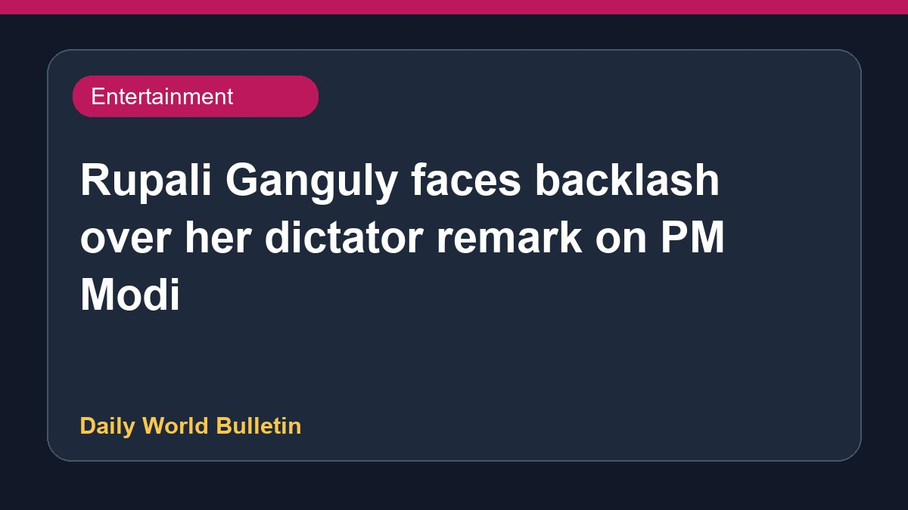

Rupali Ganguly faces backlash over her dictator remark on PM Modi

Actor Rupali Ganguly has drawn severe criticism online after making a controversial comment regarding Prime Minister Narendra Modi. Reacting to an incident involving a minor hitting a picture of the Prime Minister with a slipper, Ganguly stated that she wished he was a dictator. This remark quickly sparked widespread backlash across social media platforms, with numerous internet users condemning her statement. Consequently, the actor faced heavy trolling and criticism from various quarters for supporting authoritarian terminology.
Original source: Entertainment Sources
Rupali Ganguly reacts to minor abusing PM Modi, her 'dictator' remark draws flak - indiatoday.in ↗
Rupali Ganguly reacts to minor abusing PM Modi, her 'dictator' remark draws flak - indiatoday.in ↗